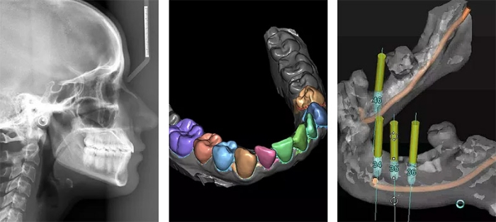

- Call us to schedule an appointment 718-382-3444
- 2579 East 17th street Suite 11, Brooklyn NY 11235 BOOK AN APPOINTMENT
Dr. Leonard Umanoff is one of the leading dental specialists. He is one of few dentists in the New York area who offers the newest and most advanced dental implant solutions. He is an expert in new techniques for placing single or multiple implants. Dr. Umanoff has over 15 years of experience and has over 6,000 successful procedures and satisfied patients. Our best-rated dental implants center is located in Sheepshead Bay, Brooklyn NY.

Replacing missing teeth is important for restoring your self-esteem. Getting rid of damaged teeth protects oral health and overall health. The best missing tooth replacement is a dental implant. Also it can restore single, multiple, or entire arches of teeth. Your new teeth provide you with the ability to eat and talk with complete confidence.
We use the newest and most advanced dental equipment available on the market in USA. We use top quality medical grade titanium or titanium alloy. These are the same materials used for other bone implants and orthopedic joint replacements. See the difference between titanium and zirconia dental implants.
Our office is conveniently located in the heart of Sheepshead Bay at 2579 East 17th street, Suite #11, Brooklyn, NY 11235. We are accessible by the following public transportation. The B4, B36 and B49 as well as the B and Q trains are all within walking distance of our office.
LuxDen Dental Center offers a wide choice of dental procedures. These include:
Immediate implant placement is possible. We can remove a failing tooth and replace it with a dental implant the same day. Or the dental implant is “loaded” and a replacement tooth is fitted after surgery.
If this isn’t possible, Dr. Umanoff can fit you with a temporary tooth. This allows you to smile, talk, and eat during the healing process. Once healing is complete, your permanent teeth replace the temporary teeth. Your new teeth look and feel more attractive and natural.
Dental implants are designed to replace damaged or missing teeth. Your new teeth are made of medical-grade titanium posts. They are surgically inserted into the jawbone. The posts replicate real tooth roots and are designed to fuse with the surrounding bone. The ability to fuse ensures implants are strong, stable, and can support a dental crown, bridge, or denture.
Replacing missing teeth with implants will provide you with the ability to smile, chew your food, and speak with confidence. Read more about dental implants and their function
Visit us for consultation in our Sheepshead Bay, Brooklyn NY office with one of the best dental implant specialist Dr. Umanoff at LuxDen Dental Implants Center: 1-718-382-3444
Dr. Umanoff’s extensive experience and training allow him to use a wide range of dental implant systems. These include mini and zirconia dental implants. Patients benefit from receiving the best implant system for their needs.
Dentists with less experience and training are only able to use one or two different dental implant systems. These specialists will try to adapt these systems to fit their patient’s needs. Dr. Umanoff chooses the most appropriate implant system for each patient.
Experience and skill are important in planning and placing dental implants. Your new teeth must be situated correctly to ensure excellent functionality and appearance. This isn’t always straightforward. Dentists with less skill or who do not use appropriate technology may place a dental implant inappropriately. This achieves a less desirable result for the patient.
The most effective dental implant treatments require extensive planning behind the scenes. With advanced technologies this is possible.
Our dental office has a 3D imaging system. We use it to take a detailed 3D scan of your jaws. The scan provides essential information when planning and placing your implants. Staying on top of new technology eliminates room for error during surgery.
Visually reconstruct your full mouth in panoramic 2D & 360 3D x-rays:
From dental scanning and planning to drilling and implant placement, the software offers us a comprehensive 3D system for accurate and predictable implant treatment. Blue Sky Plan is an advanced treatment planning software for computer guided surgery. Dr. Umanoff uses this software to 3D print surgical guides and models to replicate virtual plans.
Perfect for emergency visits and same-day restoration. Your crown is measured, planned, milled, and fitted the same day. Now you don’t have to wait weeks between appointments. Have your implant crown created within hours.
Dr. Umanoff has been using CEREC for a decade and is recognized as a Master CEREC technician.
Our dental office is equipped with the latest Biolase Dental Laser. Biolase is a sophisticated technology that combines laser energy with a gentle and soothing spray of water. Laser dentistry is faster and more accurate. With this new technology, any incisions are smaller. The energy of the laser seals the edges of the incision. These reduce discomfort and bleeding.
It is an approach that ensures your implant treatment is faster and minimally invasive. Your healing is quicker and smoother than ever before.
Much like other dental appliances, there are many types of dental implants available at our dental clinic. Our professional dental team will evaluate your oral health and determine the best type of implant for you. Crowns can come in different materials such as Porcelain Fused Zirconium, all-Ceramic, Porcelain Fused Metal, or Noble Metal. Dr. Umanoff uses his vast knowledge and experience to select the best material for your treatment.
We make implants to look and act like your natural teeth. This is how we offer our patients a worry-free solution with long-lasting results. We prepare the site for the implant using a virtual mock-up of your jaw to ensure accuracy. Once the implant is integrated, we use a custom or prefabricated abutment to create a mount for the crown.
Full mouth reconstruction refers to rebuilding or replacing all the teeth in a patient’s mouth. Full mouth reconstructions combine aesthetics with the science of restorative dentistry. Reconstructing your teeth improves the health, function, and beauty of your mouth. Dr. Umanoff specializes in cases where extensive dental work is required. This means that every step will be completed by Dr. Umanoff. He is your doctor from bone grafting and implant placement to final restoration. He plans your treatment to bring back your beautiful smile, restore your confidence, and your overall quality of life.
Dental implants are a great alternative to bridges or dentures to fill gaps where there are missing teeth. An advantage is that there are no required adjacent teeth that need to be prepared to hold the new replacement teeth in place. Tooth implants are much more comfortable than other dental appliances.
Your first visit to LuxDen Dental Center includes an implant consultation. Dr. Umanoff will review your dental and medical history. He will discuss treatment in more detail, including possible pros and cons.
Most people are suitable for replacing missing teeth with implants. You must have good oral and overall health. Good health is a requirement for the small surgical procedure. It is essential to have healthy gums and be free from periodontal disease. Tooth implants need strong support from a healthy jawbone as they fuse with this bone.
People who smoke are advised to quit before treatment. Smoking can delay the healing process. Of course, smoking causes numerous oral health problems.
Any medical conditions affecting your immune system could slow down the healing process. It may not necessarily mean you are unsuitable for dental implants. It is worth inquiring as newer and more advanced techniques are developing. Some can help people who may have been unsuitable for treatment before.
If you have medical issues, we can talk about the possible risks for implant treatment. For example, diabetes is a condition that can affect healing. People with diabetes may be suitable for treatment when this condition is well controlled.
We provide you with all the information you need to make an informed choice about your dental care.
Dental implants have a high success rate. and your care is in good hands here at LuxDen Dental Center. Dr. Umanoff is highly experienced implant dentist. We use the most advanced techniques to plan and place the best dental implants and to ensure your treatment outcome is successful.
The risk of infection is low because implants are made from biocompatible materials. They fuse with your jawbone during a process called osseointegration for strong support.
Once your new tooth is placed, our dedicated dental team will show you how to care for it. Healing is smooth and uneventful. Most people return to everyday activities soon after surgery. Your new implant tooth should feel comfortable and natural. Following the completion of dental implant treatment, we can work with you to ensure you maintain your dental implants.
It is critical to follow an excellent daily oral care routine. It is recommended to see our dentist regularly for checkups and hygiene appointments. Caring for dental implants isn’t difficult. Good oral hygiene ensures you will enjoy your implant teeth for years or for life.
Dental implants are a state-of-the-art treatment for replacing missing teeth. LuxDen Dental Center uses only the newest and most advanced components and techniques. We ensure our patients receive optimal treatment outcomes every time.
Dr. Leonard Umanoff has over fifteen years of experience in planning and placing tooth implants. His advanced skills allow him to utilize dental implants in multiple ways. He uses the most appropriate implant system for every patient. Read more about advanced technologies for dental implants.
Each tooth implant procedure is customized to accommodate every patient’s unique oral health needs. You can rest assured that we will recommend the solutions we feel are most suitable for your situation. Every treatment plan is explained in detail. We can tell you about dental implant costs and any additional procedures that are necessary, such as bone or tissue grafting.
Dental implants are manufactured from the highest quality, medical-grade titanium, providing excellent biocompatibility. The titanium is the same standard as used for orthopedic joint replacements and other bone implants.
We realize that some people prefer metal-free solutions or have metal sensitivities. We can provide zirconia dental implants for patients in this position. Zirconia is a strong ceramic material that offers excellent biocompatibility.
LuxDen is equipped with the most advanced diagnostic and planning technology. Our office is fitted with an advanced 3-D imaging system. Our technology allows Dr. Umanoff the ability to assess teeth and jaws in 3-D. He can reconstruct your mouth digitally. By virtually planning your treatment, we ensure the entire procedure is quicker, smoother, and more successful.
State-of-the-art treatment planning software works seamlessly with our 3-D imaging system. We streamline the workflow process and assist with further planning and diagnosis during computer guided surgery.
Our in-house 3-D printer is used to print surgical guides and models. Wherever possible, all implant restorations are fabricated in-house using advanced materials. Having a printer in our office allows us to monitor the quality of all replacement teeth.
Our dental team in Brooklyn, NY can provide a thorough dental examination to determine if dental implants would benefit your oral health. In order to schedule a consultation at our office, call us today at 718-382-3444.